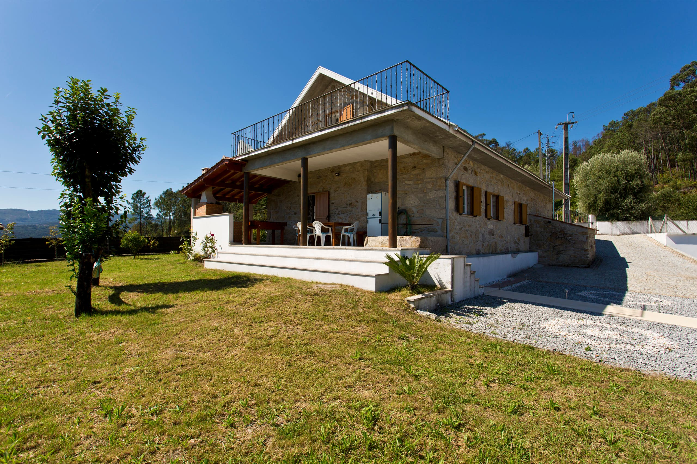
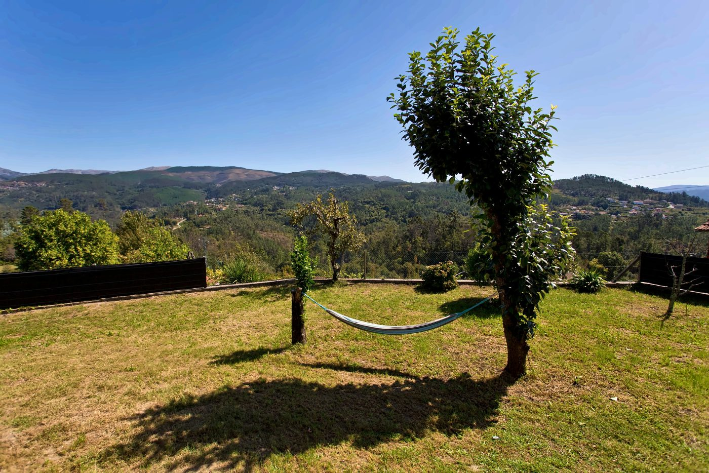
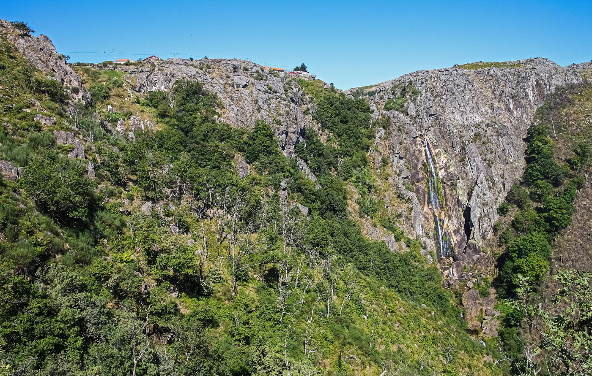
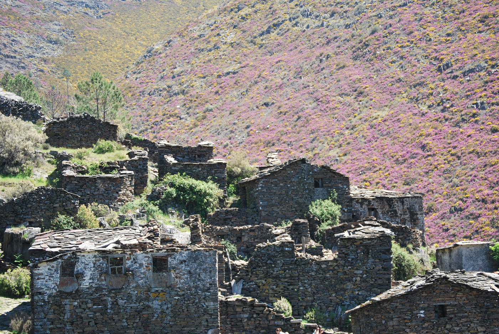
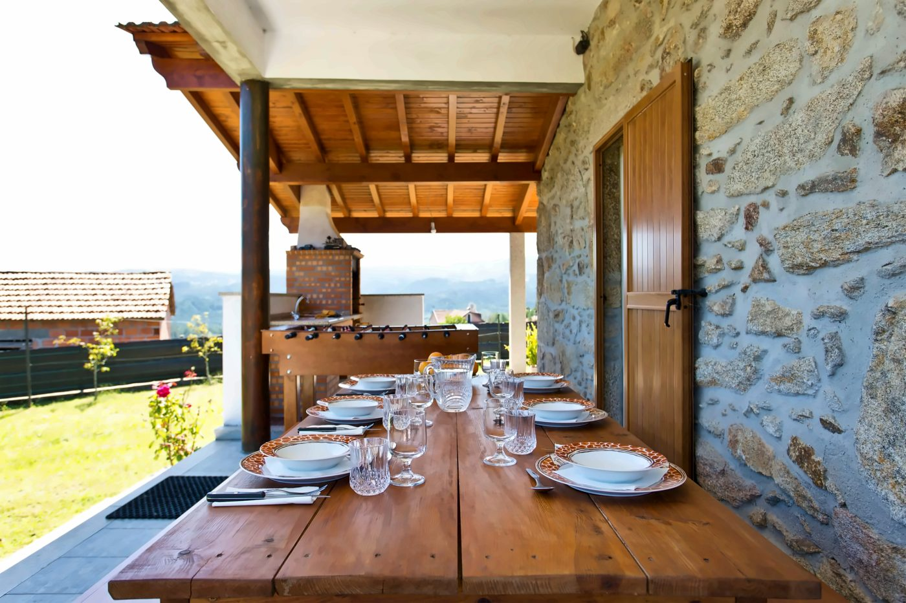

Casa da Aldeia
Casal Velide · Arões · Vale de Cambra
Uma casa de pedra, só para o seu grupo
Reconstruída sobre um antigo lagar, na aldeia de Casal Velide. Paredes de granito, portadas de madeira, lareira na sala e o vale à frente de casa.

A serra à frente de casa
A serra da Freita em frente, e o vale aos pés da casa.
Exterior
Piscina privada, um alpendre com churrasqueira e o jardim virado ao vale.
Espaços comuns
Pedra, madeira e lugar para todos à mesa.
A salaParedes de granito e lareira a lenha.
A mesaToalha de renda, aparador e cristaleira.
A cozinhaForno, máquina de louça e de café.
O mezaninoSob o teto de madeira, com claraboia.
0104
Quartos
Quarto 1 cama de casal
Quarto 2 cama de casal
Quarto 3 sob o telhado, com terraço
Comodidades
- Piscina privadana época quente
- Churrasqueiradebaixo do alpendre
- Jardim vedadobaloiços e cama de rede
- Lareira a lenhana sala
- Cozinha equipadaforno e placa
- Máquina de lavar louçae máquina de café
- Máquina de lavar roupa
- Wi-Fie secretária no mezanino
- Sofá-camana sala
- Estacionamentoprivado, para três carros
- Animais aceites
A aldeia e a serra
Casal Velide é uma aldeia parada no tempo, especial para descansar. Sempre que encontrar alguém nas suas caminhadas, não se esqueça do «bom dia!» e receberá um sorriso em troca.
Cris e Alex, anfitriões





Venha abrandar
Uma casa de pedra inteira, com piscina privada e o vale à frente.
- Entrada das 17:00 às 20:00
- Animais aceites
- Não se fuma
- Sem festas nem eventos